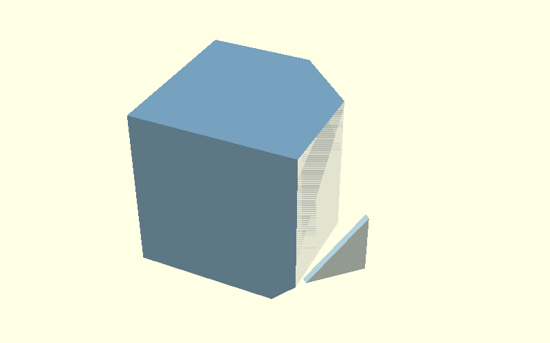
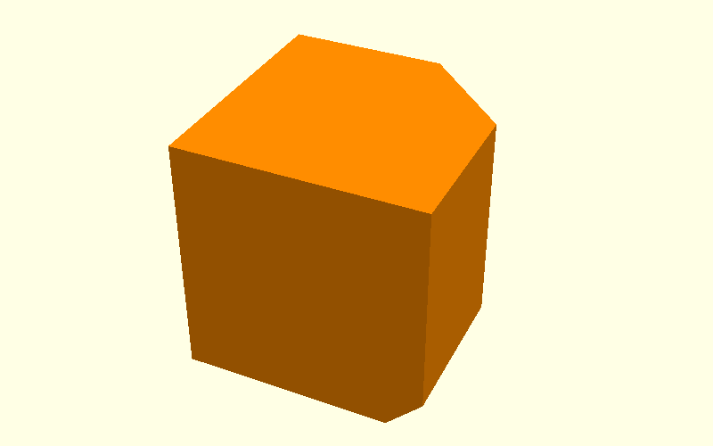

Beam experiment: why cs and ef still need a local junction hull
This beam isolates the exact Corner Bracket problem.
Both main operations are built the same way:
two solids → hull() → intersect with the beam
That works for the normal side chamfer cs, and it also works for the
elephant-foot relief ef around the complete bottom perimeter.
The remaining problem is not either hull by itself. It is the corner where the two hull envelopes meet.
0. Reference beam

The normal end-profile chamfer c is already part of the beam.
1. cs: transparent hull inputs

Blue and orange are the two actual solids passed to hull().
2. cs: result

The side chamfer is correct.
3. ef: transparent hull inputs

Again, these are the two actual solids passed to hull().
The lower footprint is inset by ef on all four sides, so this operation
includes both the long bottom edges and the bottom edges on the kopse kanten.
4. ef: result

The bottom relief is correct on its own.
5. Combine both hull envelopes

The beam is now simply:
openscad
intersection() {
beam();
cs_hull();
ef_hull();
}
This looks almost right, but intersection() only clips the two envelopes.
It does not construct a new blended surface where they cross.
6. The isolated defect

This is the same small unwanted termination seen on the real Corner Bracket.
That is useful: the problem already exists on a straight beam, so it is not caused by the L-shaped profile or the inside radius.
It comes from the 3D meeting of the separate cs and ef hulls.
7. Local correction: two transparent hull inputs

The correction is deliberately small.
The two blue triangular profiles are the inputs to one additional local
hull(). The beam is only shown faintly to make their position clear.
So this correction follows the exact same visual rule as the other operations:
two inputs → hull()
8. Corrected meeting corner

The additional hull only removes the local corner defect. The broad cs and
ef constructions remain unchanged.
The resulting explanation is therefore:
- build
csfrom two hull inputs; - build
effrom two hull inputs; - combine them;
- observe that their intersection leaves one local defect;
- bridge that junction with one small third hull.
Source
The complete experiment is in
scad/hull_operations.scad.